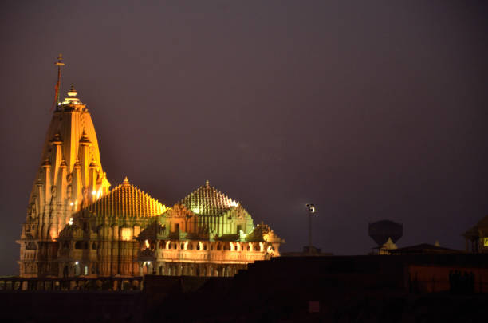
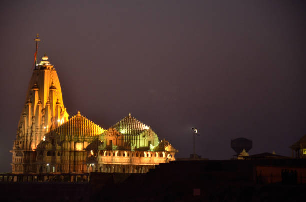

~ The Somnath temple, also called Somanātha temple or Deo Patan, is a Hindu temple located in Prabhas Patan, Veraval in Gujarat, India. It is one of the most sacred pilgrimage sites for Hindus and is believed to be first among the twelve jyotirlinga shrines of Shiva.[1] The temple was reconstructed several times in the past after repeated destruction by multiple Muslim invaders and rulers, notably starting from an attack by Mahmud Ghazni in the 11th century.[2][3][4][5] It is unclear when the first version of the Somnath temple was built with estimates varying between the early centuries of the 1st-millennium to about the 9th-century CE.[6][7]
~ Jyotirlingas are sacred shrines of Lord Shiva; it is believed that Lord Shiva himself visited these places and hence they have a special place in the hearts of devotees. There are 12 of them in India. Jyotirlinga means ‘column or pillar of light’. The ‘stambha’ symbol represents that there is no beginning or end.When Lord Brahma and Lord Vishnu had an argument about who was the supreme god, Lord Shiva appeared as a column of light and asked each one to find the ends. Neither could do it. It is believed that the places where these columns of light fell is where the jyotirlingas are located. The most sacred of the 12 jyotirlingas in India is the Somnath Jyotirlinga.
~ Hammir Ji Gohil, a 16-year-old Hindu Rajput boy, pledged to protect Somnath temple from Turkic hordes in 1299. He fought gallantly to his last breath. Above is his statue near Somnath, which stands tall to this day. "To every man upon this earth, death cometh soon or late.
 

~ The Somnath temple is located along the coastline in Prabhas Patan near Veraval, Saurashtra region of Gujarat. It is about 400 kilometres (249 mi) southwest of Ahmedabad, 82 kilometres (51 mi) south of Junagadh – another major archaeological and pilgrimage site in Gujarat. It is about 7 kilometres (4 mi) southeast of the Veraval railway junction, about 130 kilometres (81 mi) southeast of the Porbandar airport and about 85 kilometres (53 mi) west of the Diu airport.[13]
~ The Somnath temple is located close to the ancient trading port of Veraval, one of three in Gujarat from where Indian merchants departed to trade goods. The 11th-century Persian historian Al-Biruni states that Somnath has become so famous because "it was the harbor for seafaring people, and a station for those who went to and fro between Sufala in the country of Zanj (east Africa) and China". Combined with its repute as an eminent pilgrimage site, its location was well known to the kingdoms within the Indian subcontinent.[14][15] Literature and epigraphical evidence suggests that the medieval era Veraval-Patan area port was also actively trading with the Middle East and Southeast Asia. This brought wealth and fame to the Veraval area as well as the temple.[16]
~ The site of Prabhas Patan was occupied during the Indus Valley Civilisation, 2000–1200 BCE. It was one of very few sites in the Junagadh district to be so occupied. After abandonment in 1200 BCE, it was reoccupied in 400 BCE and continued into the historical period. Prabhas is also close to the other sites similarly occupied: Junagadh, Dwarka, Padri and Bharuch.[16]
~ Since ancient times, the Somnath temple has been treated as one of the greatest pilgrimage sites in India. The major reason for this is the fact that it is located on the confluence of three rivers - also known as Triveni Sangam - namely Kapila, Hiran, and Sarasvati.
~ Many legends are associated with this place. According to one such folklore, once upon a time, Soma, the Moon God, had lost his luster. To regain it, he decided to bathe in the holy waters of river Sarasvati. And it is owing to this that people started believing in the phenomenon of waxing and waning of the moon.
~ According to the documented works of J. Gordon Melton, it was this place that witnessed the first temple dedicated to Lord Shiva in Somnath. And the second temple is believed to have been built on the same site by the Yadava Kings in around 640 BCE. However, it was in the year 725 BCE that the Arab Governor Al- Junayd is said to have destroyed this temple when he invaded the states of Gujarat and Rajasthan.
~ Then, in 1024, the cruel Turkic ruler Mahmud of Ghazni did many raids in Gujarat breaking the temple and severely damaging the Jyotirlinga from various places. It is said that he took away with himself a booty worth 20 million dinars.